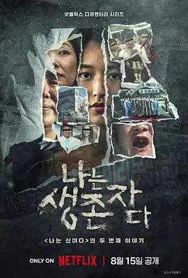

8.3
以幸存者之名：深入韩国惨案
The Echoes of Survivors: Inside Korea’s Tragedies
2025
韩国
评分 8.3
导演:
赵成铉（조성현 PD）
演员:
叶萱
类型:
犯罪
剧情简介
在韩国近代历史上，有些惨案被掩埋多年、被社会遗忘。本纪录片走进四起震撼人心的真实事件：从 釜山兄弟福利院事件 被迫劳役、虐待的回忆，到 至尊派事件 的令人发指的连环杀害，再到 三丰百货大楼倒塌惨案 里倒塌钢筋与逃生呼喊，以及曾经备受瞩目的宗教组织 基督教福音宣教会（俗称 JMS）背后的性暴力与操控。每一集，都由幸存者亲口述说，从阴影中走出的声音，透过镜头被还原。叶萱作为受害者代表，带领观众穿越时间，回到那段本该被治愈却被掩盖的历史。镜头捕捉到她在采访椅上的沉默、在再访废墟时尚未愈合的伤痕。她曾在 JMS 中成为受害者，如今用勇气与镜头中的声音一同呐喊。纪录片不回避镜头中的痛苦——割裂的记忆、深夜的惊醒、凝固的照片与软哑的证言交织出真相的碎片。 节目中还再现了兄弟福利院的蓝色训练服、三丰大楼坍塌时的茫然人群、以及被圈禁在信仰牢笼中的受害者对话。这些画面虽然令人不适，却无法被忽视。制作团队刻意让那些场景“活”起来，只为让观众明白：让痛苦沉默不是正义。 观众跟随镜头，进入幸存者的世界——从肆意的压迫到坚韧的复起，从被隐蔽的角落到公众视野。纪录片在明亮灯光与阴暗场景之间摆动，让每一个镜头都成为“为什么”后的“怎么办”。它不是简单的回忆，而是一种呼吁：历史必需被看见，伤痕才能被治疗。